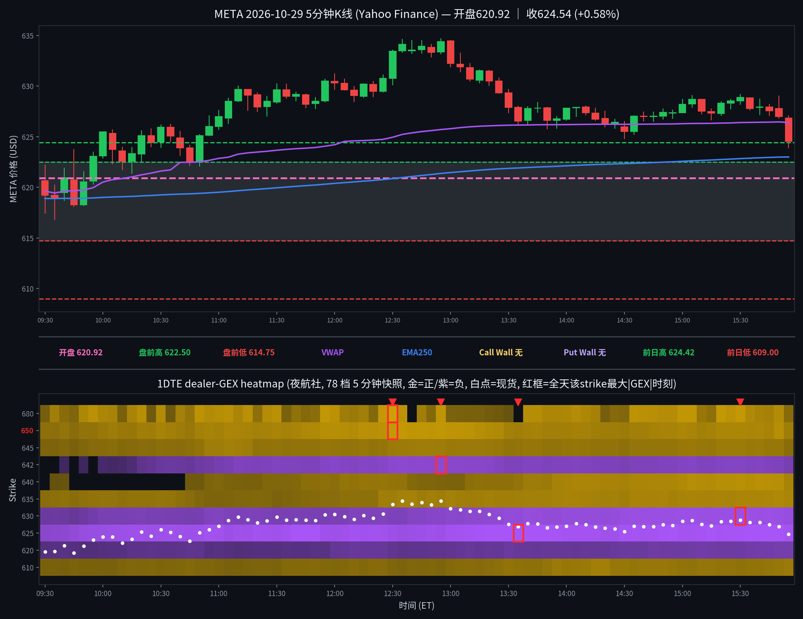

META 日内报告
2026年10月29日 · 周四 · 日内报告
早盘分析
（Junk-man 早盘简报未抓取到，留空待补）
（待补充 Junk-man 当日 #junkman-analysis 原文）
5 分钟 K 线 × 1DTE heatmap
1DTE（2026-10-30到期），夜航社 78 档 5 分钟快照；白点为每档现货位置

heatmap解读（1DTE（2026-10-30到期），夜航社 78 档 5 分钟快照）
GEX 地形图（1DTE（2026-10-30到期），夜航社 78 档 5 分钟快照）：金色=正 gamma 区（做市商对冲减速带/墙），紫色=负 gamma 区（加速带）。白点为每档现货位置。
- 金色带（15:55收盘帧）：635(+11.1M)/640(+10.5M)/650(+9.1M)/610(+8.5M)/645(+5.9M)/680(+5.5M)；现价 ±5 点内无正节点（622.5 仅 +1.2M），正 gamma 全在远端
- 紫色带（15:55收盘帧）：625(-30.8M)/630(-24.9M)/642.5(-12.7M)/620(-12.0M)/612.5(-8.0M)；现价 624.65 正处 625/630 负簇之间，负 gamma 高度集中在现价一带
- 全天最大节点：625(-35.2M@13:35)、630(-27.0M@15:30)、642.5(-20.5M@12:55)、680(+18.8M@12:30)、650(+16.3M@12:30)、640(+14.1M@15:40)
- 结构特点：总 gamma 开盘 -1.9M → 10:30 -22.1M → 13:30 -48.8M（全天最负）→ 15:55 -40.5M，全天为负；上午价格在负 gamma 加速结构中稳步上行（619→634.68），午后回落至 624.54，收盘仍在 625 负簇边缘；收盘价在 VWAP(626.41)下方、EMA250(623.00)上方
全天最大节点 TOP5
一、625（全天主加速带，价格全程在其上方运行）：全天变化——09:30 -18.8M → 10:00 -26.2M → 11:00 -29.2M → 13:00 -30.2M → 13:35 -35.2M 峰值 → 15:50 -34.6M → 15:55 -30.8M；影响时段——10:00 起价格收盘站上 625 后再未收回其下方（仅终根 15:55 收 624.54 勉强跌回下方）；影响方式——负 gamma 加速带而非墙：价格在其上方时负值逐级加深，配合上午稳步上行（10:00 收 625.48 → 12:55 高 634.68），属顺势加速结构，未出现被 625 压回的情形。
二、630（次级加速带，午后随价格回落而见顶）：全天变化——09:30 -9.2M → 10:00 -13.1M → 12:00 -13.7M → 13:00 -19.3M → 15:00 -26.7M → 15:30 -27.0M 峰值 → 15:55 -24.9M；影响时段——11:55 价格首收 630.50 站上 630，13:30 起价格回落至 630 下方（13:30 收 627.90）；影响方式——价格在其上方时负值加深助涨，午后价格跌回其下方后负值仍在 -25M 量级，未把价格进一步拖向 625 下方，收盘 624.54 仍贴在 625 一带。
三、642.5（上方远端负簇，见顶时刻即全天高点时刻）：全天变化——10:00 -2.2M → 11:00 -12.4M → 12:00 -17.9M → 12:55 -20.5M 峰值（现货 634.39 在其下方约 8 点）→ 15:50 -15.0M → 15:55 -12.7M（释放）；影响时段——上午随价格上行逐级加深，12:55 价格见全天高 634.68 的同一档见顶；影响方式——远端负簇：价格从未到达 642.5，但其加深过程与上午加速上行同步，午后随价格回落同步释放，未兑现为向上加速到 642.5。
四、680（远端正节点，与价格无关的背景）：全天变化——09:30 +3.3M → 10:00 +11.3M → 12:30 +18.8M 峰值（现货 633.45 在其下方约 47 点）→ 13:00 +4.1M（骤衰）→ 15:00 +15.8M → 15:55 +5.5M；影响时段——全天距现价 45 点以上，从未进入价格 ±10 点范围；影响方式——纯背景正节点：13:00 的骤衰与价格午后回落同向但无因果读数，不作支撑/阻力。
五、650（上方正带，午间峰值后衰减）：全天变化——09:30 +6.4M → 11:00 +10.0M → 12:30 +16.3M 峰值（现货 633.45 在其下方约 17 点）→ 13:00 +15.3M → 15:50 +13.7M → 15:55 +9.1M；影响时段——上午至午间随价格上行缓慢增厚，但价格距其最近时仍有约 15 点；影响方式——远端正带：只作上方背景，价格最高 634.68 未靠近 650，未起上行压制或承接作用。
亮度口径：p99 截断做上限；红框 = 全天该 strike 最大 |GEX| 时刻；TOP5 排名以全天最大 |GEX| 为准（build_meta_day.py 输出一致）。
资金流（1DTE到期2026-10-30，11笔；premium≥$20万｜size≥50｜DTE≤1｜side=B/M/A）
| 时间 | Strike | C/P | DTE | Fill | Bid/Ask | Side | Size | Prem | Vol | OI |
|---|---|---|---|---|---|---|---|---|---|---|
| 09:33:09 | 625.0 | CALL | 1 | $5.00 | 4.95 / 5.00 | ASK | 450 | $0.225M | 444 | 4088 |
| 10:12:35 | 660.0 | PUT | 1 | $37.50 | 36.00 / 37.50 | ASK | 100 | $0.375M | 203 | 906 |
| 10:24:30 | 660.0 | PUT | 1 | $35.20 | 35.20 / 37.50 | BID | 100 | $0.352M | 305 | 906 |
| 10:47:02 | 660.0 | PUT | 1 | $37.00 | 35.90 / 37.00 | ASK | 100 | $0.370M | 417 | 906 |
| 10:58:48 | 620.0 | CALL | 1 | $10.35 | 10.35 / 10.50 | BID | 250 | $0.259M | 6551 | 1308 |
| 11:10:46 | 625.0 | PUT | 1 | $4.85 | 4.80 / 4.85 | ASK | 505 | $0.245M | 3767 | 3166 |
| 11:35:44 | 632.5 | CALL | 1 | $5.55 | 5.50 / 5.55 | ASK | 445 | $0.247M | 6270 | 1292 |
| 12:43:10 | 630.0 | CALL | 1 | $8.95 | 8.90 / 8.95 | ASK | 250 | $0.224M | 21122 | 4289 |
| 13:13:30 | 632.5 | PUT | 1 | $7.00 | 6.95 / 7.00 | ASK | 402 | $0.281M | 2368 | 564 |
| 13:39:08 | 660.0 | PUT | 1 | $33.40 | 32.60 / 33.40 | ASK | 100 | $0.334M | 653 | 906 |
| 13:48:19 | 625.0 | CALL | 1 | $8.00 | 8.00 / 8.10 | BID | 250 | $0.200M | 19956 | 4088 |
原始 134 笔中 11 笔通过 DTE≤1（全为 2026-10-30 到期；其余为远期到期，被正确过滤）。按 flow 口径（call ask＋put bid＝偏多，put ask＋call bid＝偏空，mid 不计；无 mid 单）：偏多 4 笔 $1.048M（C625 ask $0.225M、C632.5 ask $0.247M、C630 ask $0.224M、P660 bid $0.352M），偏空 7 笔 $2.064M（P660 ask 3 笔合计 $1.079M、P625 ask $0.245M、P632.5 ask $0.281M、C620 bid $0.259M、C625 bid $0.200M）。名义偏空，但 P660 深实值 4 笔（现货约 623–627、行权 660，成交价 33.4–37.5 几乎等于内在价值，时间价值约 0.1–0.2）合计 $1.431M，应为到期前平仓/了结而非方向押注，剔除全部 P660 单后偏多 $0.696M（仅 call ask）对偏空 $0.985M（P625/P632.5 ask $0.526M＋C620/C625 bid $0.459M），仍偏空但差距收窄、无单边大单主导。方向单集中在 625–632.5 一带（上午 call ask 与 put ask 交替），与价格上午上行、午后回落的走势一致。注意：DTE≤1 大单最晚一笔为 13:48 ET，午后 14:00–16:00 时段无符合口径的大单。
分析总结
价格行为 × 1DTE GEX 结构复盘
① 开盘 620.92（官方），全天 616.80–634.68，收 624.54（+1.97% vs 昨收 612.49；收开差 +3.62）。高开缺口 +1.38%（昨收 612.49 → 开盘 620.92），缺口全天未回补（全天低 616.80 仍高于昨收）。
② 白点轨迹：开 620.92 → 首根收 619.24、09:35 低 616.80（全天低，仍高于昨收）→ 09:55 收 623.08 站上盘前高 622.50 → 10:00 收 625.48 站上 625 与前日高 624.42 → 11:55 首收 630.50 站上 630 → 12:55 高 634.68（全天高）→ 午后回落，13:30 收 627.90 跌回 630 下方 → 终根 15:55 收 624.54，勉强跌回 625 下方。盘前高 622.50 开盘后约 25 分钟站上且再未收回其下方；盘前低 614.75 全天未触及。
③ 结构：总 gamma 全天为负（开盘 -1.9M → 13:30 最负 -48.8M → 收盘 -40.5M）；625/630/642.5 负簇全天加深而非瓦解，价格在负 gamma 加速结构中上午上行、午后回落——负 gamma 放大双向波动，未形成正 gamma 钉住。收盘现价 624.65（heatmap 帧）正处 625 负簇边缘，现价 ±5 点内无正节点承接。
④ Junk-man 简报待核实（见 junkman 字段）：若核实无独立 META 简报，墙位记 null；收盘算法关键位见明日预测（算法值，非简报墙）。
⑤ 收盘在 VWAP 下方（VWAP 626.41）/ EMA250 上方（EMA250 623.00）。
K线=Yahoo Finance 5分钟；heatmap=夜航社 dealer-GEX 5分钟快照；heatmap亮度=平方根连续渐变（p99裁剪）。
收盘后的静态快照；页面不在打开时更新行情。